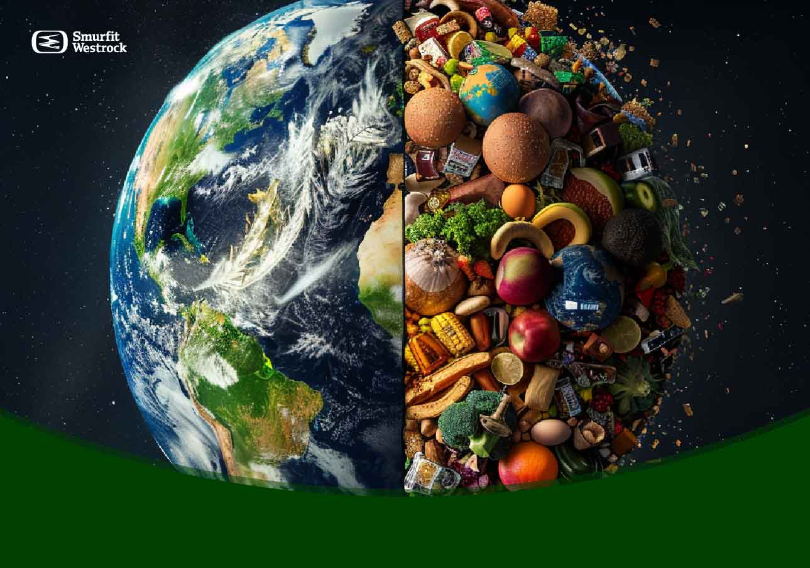

ODS 12: Por um Mundo Mais Sustentável: Consumo e Produção Responsáveis

O Futuro do Planeta Começa nas Nossas Escolhas
A ODS 12 – Consumo e Produção Responsáveis faz parte dos Objetivos de Desenvolvimento Sustentável da ONU e busca incentivar hábitos de consumo conscientes e formas de produção mais sustentáveis. Seu objetivo é reduzir o desperdício, diminuir a geração de resíduos, economizar recursos naturais e promover um futuro melhor para todos. Afinal, pequenas atitudes no nosso dia a dia podem fazer uma grande diferença para o planeta!
Por que a ODS 12 é importante?
Ela é muito importante porque busca conscientizar as pessoas sobre a necessidade de consumir e produzir de maneira responsável, evitando o desperdício e os danos ao meio ambiente. ajuda a reduzir a poluição, diminuir a quantidade de lixo, preservar os recursos naturais e incentivar a reciclagem e a reutilização de materiais. Além disso, promove hábitos mais sustentáveis, como economizar água e energia, evitar o desperdício de alimentos e comprar apenas o necessário. Essas atitudes fazem diferença na proteção do planeta e na qualidade de vida de todos. Por isso, é essencial para construir um mundo mais sustentável, garantindo que as futuras gerações também possam aproveitar os recursos naturais e viver em um ambiente mais limpo e saudável.
Os 5 Rs da Sustentabilidade são atitudes que ajudam a diminuir a produção de lixo, economizar recursos naturais e preservar o meio ambiente.
1. Repensar: refletir sobre nossos hábitos de consumo e evitar desperdícios.
2. Recusar: não aceitar produtos que prejudicam o meio ambiente, como sacolas plásticas e embalagens desnecessárias.
3. Reduzir: consumir menos e evitar o desperdício de água, energia e materiais.
4. Reutilizar: usar novamente objetos e materiais, dando a eles uma nova utilidade.
5. Reciclar: transformar materiais descartados, como papel, plástico, vidro e metal, em novos produtos.
